Consultoría de Impacto
La orientación al impacto en Impact Up significa orientar su trabajo hacia el cambio que quieren lograr en la sociedad. Para ello aportamos experiencia especializada en planificación, monitoreo y evaluación (PM&E) y trabajamos como consultoría de procesos con una actitud sistémica. El impacto sigue siendo de ustedes. Nuestra mirada especial está en las relaciones, porque el impacto en la sociedad surge donde las personas y las organizaciones colaboran bien.

Lo que acompañamos.
Según el punto en el que se encuentren, se trata de uno o varios de estos temas.
Aclarar el impacto
Ustedes formulan juntos qué cambio buscan, de modo que el personal, las personas voluntarias y las organizaciones aliadas se reconozcan en él.
Desarrollar Impacts y Outcomes
Del gran impacto surgen cambios concretos con los que orientan su trabajo en el día a día.
Theory of Change
Hacemos visible a través de qué pasos y supuestos su trabajo conduce al impacto, y revisamos juntos esos supuestos.
Outcome Mapping
La mirada se dirige a las personas y organizaciones con las que trabajan, a los cambios en su actuar y a sus relaciones con ellas.
Monitoreo y evaluación
Indicadores y formatos que ustedes usan en el día a día y con los que aprenden qué logra su trabajo.
Estrategia orientada al impacto
La estrategia y la lógica de impacto se desarrollan en conjunto, de modo que sus decisiones se orienten hacia el impacto.
Cooperación en el campo de impacto
Ustedes aclaran con quién trabajan en el mismo impacto y cómo se fortalecen mutuamente. Así, de muchos impactos individuales surge un campo coherente.
Impact Networks y Systems Change
Cuando varios actores trabajan juntos en un cambio, acompañamos su orientación común, por ejemplo con las Six Conditions of Systems Change.
Cómo trabajamos.
Partimos de las cuatro perspectivas sobre el impacto que describimos en la página de inicio. Van desde la resonancia en las personas, pasando por la estructura de la organización, hasta la coherencia en el campo de impacto y la cooperación en la sociedad. Desarrollamos el impacto junto con quienes trabajan por él, hasta que sea coherente hacia dentro. Lo desplegamos haciendo que equipos, roles y estructuras se orienten hacia él. Y lo conectamos con el campo de impacto y la sociedad en los que debe cambiar algo.
Metodológicamente recurrimos a una gran variedad. Combinamos las herramientas de la planificación de impacto con formatos participativos y cocreativos y con formatos de reflexión en los que cuenta su experiencia. Lo que usamos depende de sus necesidades y de lo que ustedes mismos pueden continuar.
En la sociedad, muchos impactos se entrelazan. Por eso trabajamos en diálogo, con principios y con ciclos de aprendizaje. Cómo unimos el trabajo sistémico y la orientación al impacto lo describimos en Orientación al Impacto Sistémico. Si se trata del desarrollo de su propia organización, lo encuentran en nuestra oferta Desarrollo Organizacional Sistémico.
Lo que aportamos.
Damos forma al impacto con pequeñas iniciativas y también con grandes redes, y empezamos donde tiene sentido para ustedes.
Stefan aporta la experiencia de numerosas planificaciones de impacto, entre ellas seis años de Servicio Civil para la Paz en Camboya. Participó en dos desarrollos estratégicos cocreativos de mayor envergadura con muchas personas.
Cómo surge una colaboración.
Nos entendemos como actor organizador. Según el tema, sumamos a otras personas y desarrollamos junto con ustedes una solución.
Para poder hacerles una propuesta concreta, primero aclaramos juntos su encargo. Esta primera aclaración es gratuita y sin compromiso. Por lo general, ya en una conversación en línea desarrollamos primeros enfoques sobre cómo pueden avanzar con su tema en el sentido de su impacto. Solo después les hacemos una propuesta. Escríbannos.